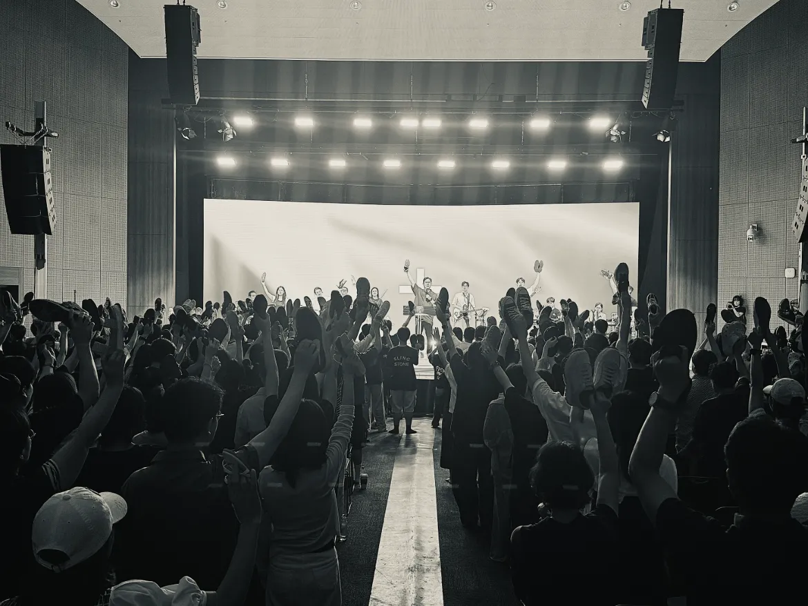

ONPRAY
깨어 기도하는 자리
오늘의 선포
{{ todayDayLabel }} 보혈 선포 기도문
오늘의 선포
{{ weekendTitle }}
오늘 {{ todayTotal }}명이 이 자리에서 선포했습니다
{{ streakLabel }}
{{ openNote }}
{{ blk.h }}
{{ para }}
오늘 0시부터 지금까지 실제 접속 집계
시간마다 함께 깨어 있는 동역자들의 기록입니다.
당신의 방문도 이 불씨 중 하나가 되었습니다.
원하시는 시간에 알림을 보내드립니다.
이 사이트를 홈 화면에 추가해 두시면 더 잘 작동합니다.
{{ alarmStatus }}
이 사역을 함께 세워 주세요
추가하고 싶은 기도문이나 수정 요청을
이메일로 보내 주세요